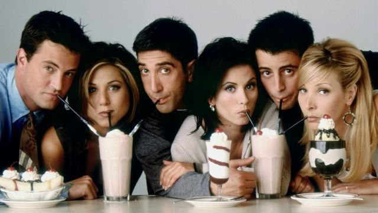

«Friends» lleva ya más temporadas reponiéndose que emitiéndose en directo. Y pese a todo ello los telespectadores no se cansan de ver la historia de un grupo de amigos en Manhattan, como demuestra que Netflix no dudase a la hora de comprar sus derechos.Resulta ciertamente insólito que una serie haya logrado posicionarse entre lo más visto a lo largo de 236 capítulos sin venirse a menos. El último episodio de la décima temporada fue la segunda transmisión más vista en 2004, solo por detrás de la Super Bowl.Además de su notable valor cuantitativo, capaz concitar a millones de espectadores frente a las pantallas, también los paladares más exquisitos han dado su visto bueno a la serie. En 2015, «Friends» fue elegido el programa favorito de todos los tiempos por más de 2.800 expertos televisivos consultados de The Hollywood Reporter. Muchos críticos han señalado que es precisamente esta ligereza la que ha contribuido a hacer de «Friends» una sitcom que conecta con espectadores de distintas generaciones. Marta Kauffman, creadora de la serie junto a David Crane, se sorprendió hace pocos años cuando a su hija de 17 le preguntó un compañero del instituto si había visto «ese nuevo programa llamado 'Friends'».
La historia da inicio en un café de Nueva York, Central Perk, en el cual se encuentran los personajes:
Ese encuentro da comienzo a una etapa donde seis amigos viven en la ciudad de Nueva York. Es una comedia basada en la amistad, los buenos y malos momentos como: los triunfos, el amor, el pasado y el futuro. La serie maneja claves de amistad y convivencia, contraste de personalidades (neurosis, obsesión, ingenuidad, competencia, inocencia…), para narrar el día a día de varios personajes en torno a su vida amorosa, laboral
